ISE
Identity Services Engine (ISE)
Adding RADIUS Clients
Creating Locations
Go to Administration > Network Device Groups
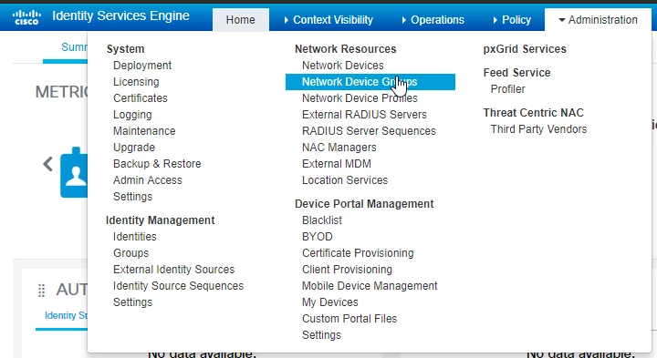Add a group, for example:
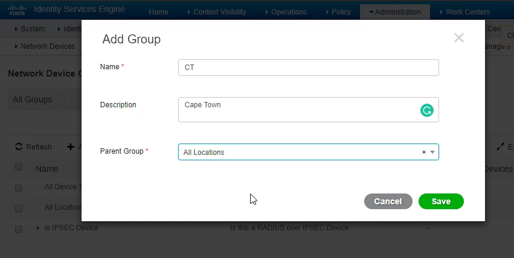Adding Devices to ISE
Go to Administration > Network Devices
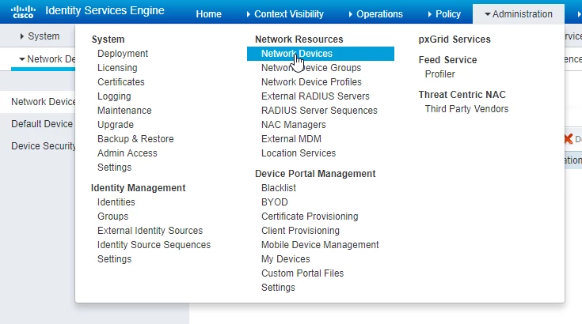Fill in all the details
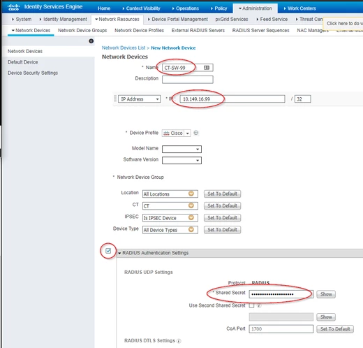Authenticator Configuration
See https://docs.calebsargeant.com/en/latest/networking/cisco/switching/aaa.html#RADIUS
ISE and AD
Joining ISE to AD
Go to Administration > External Identity Sources
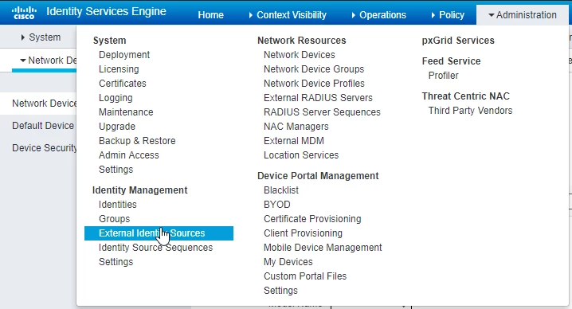Click on Active Directory and click on Add
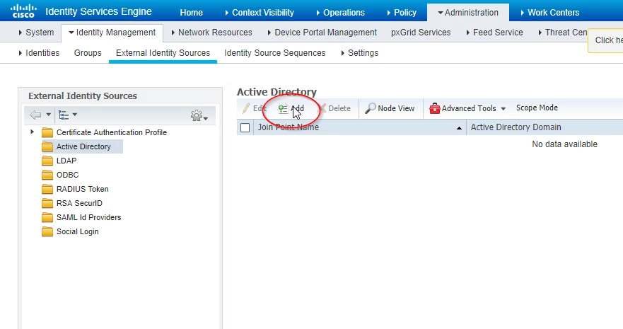Input the details and click Submit
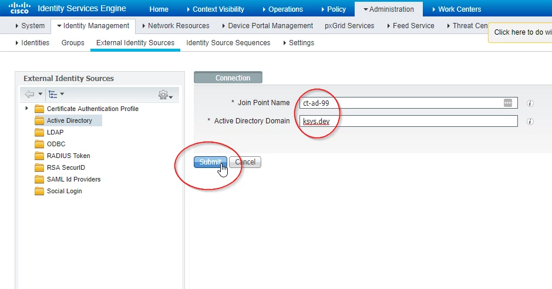Click Yes
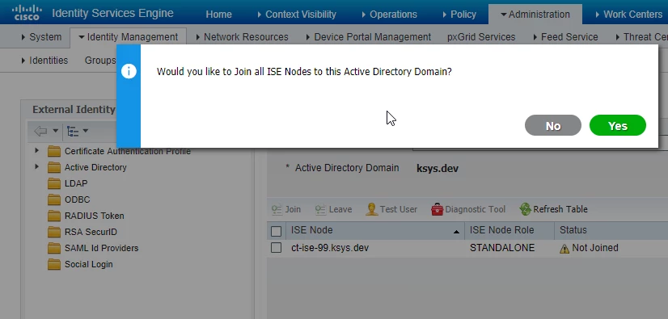Authenticate
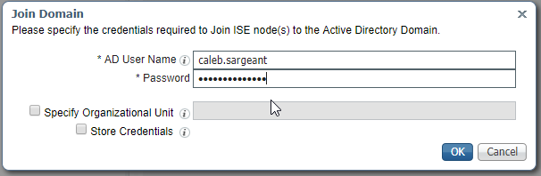You will see the Computer object in AD
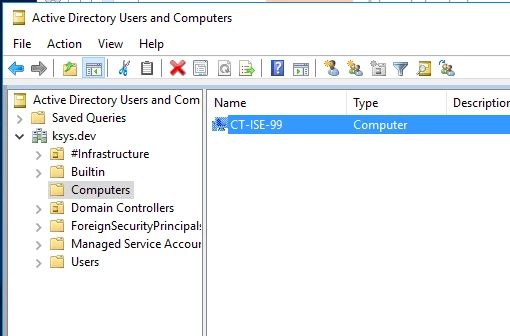Identity Sources
Go to Administration > Identity Source Sequences
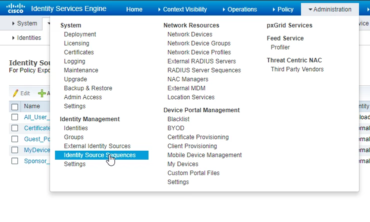Click Add
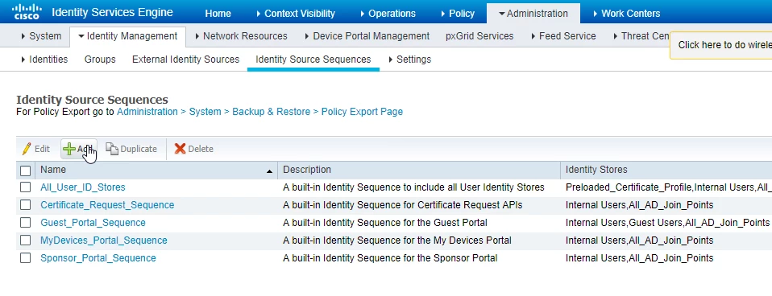Modify the Identity Source Sequence accordingly
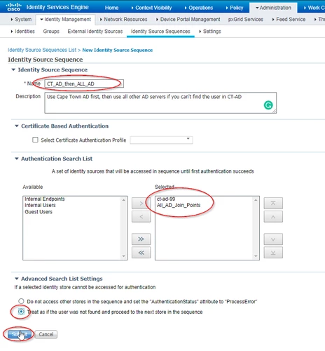Wired Dot1x Switch Config
Global Config
# use the radius server for dot1x authentication
aaa authentication dot1x default group radius
# use the radius server for authorization
aaa authorization network default group radius
# use the radius server for accounting
aaa accounting dot1x default start-stop group radius
# include IP Address of supplicant request in accounting
radius-server attribute 8 include-in-access-req
# enable dot1x
dot1x system-auth-control
Switchport Config
int g0/xx
switchport host
#set the mode
authentication host-mode multi-auth
#set authentication type
authentication open
#set recurring authentication
authentication periodic
#let server decide how often to reauthenticate
authentication timer reauthenticate server
# set Port Access Entity to act as authenticator
dot1x pae authenticator
# supplicant retry timeout (sec)
dot1x timeout tx-period 10
# enable 802.1x control of port
authentication port-control auto
Verification
CT-SW-99#sh dot1x all
Sysauthcontrol Disabled
Dot1x Protocol Version 3
Dot1x Info for GigabitEthernet0/30
-----------------------------------
PAE = AUTHENTICATOR
PortControl = AUTO
ControlDirection = Both
HostMode = MULTI_AUTH
QuietPeriod = 60
ServerTimeout = 0
SuppTimeout = 30
ReAuthMax = 2
MaxReq = 2
TxPeriod = 10
# show authentication status
sh authen int g0/30
# show authentication sessions
sh authen session int g/30
# debug
debug radius authentication
ISE CA Certificates
Due to installing a PKI integrated into AD, ISE will automatically receive a certificate from AD, upon joining the domain. If this does not happen, add the ROOT CA Certificate by going to Administration > System > Certificates > Trusted Certificates and click on Import
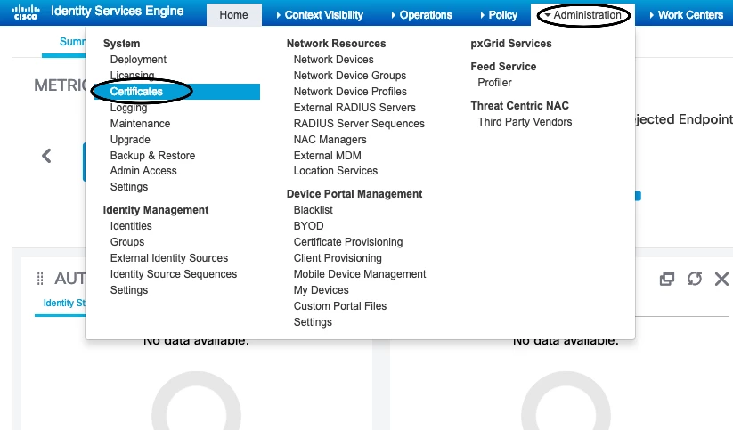Choose the Certificate File downloaded from the Root CA, give it a Friendly Name, smash the Trust checkboxes and click on Submit.
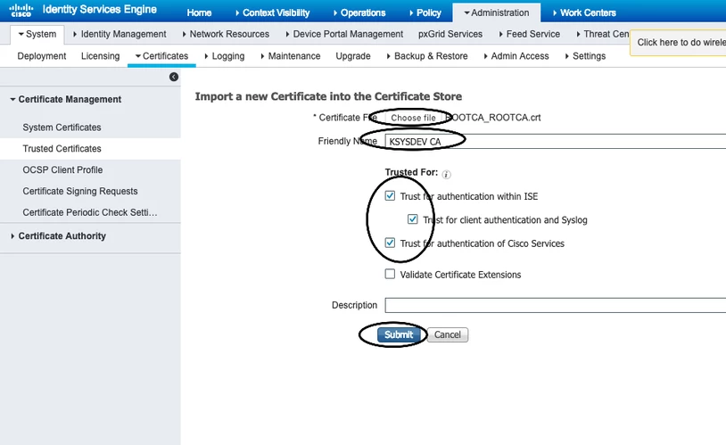To generate a CSR, go to Certificate Signing Requests and click on Add, fill in the details and click on Generate.
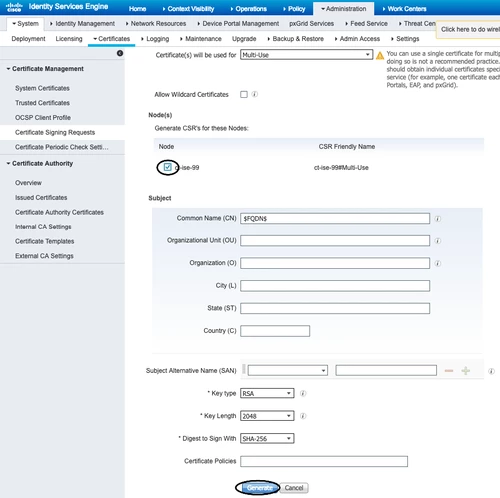 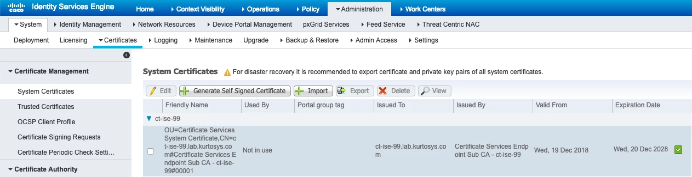802.1x MAB (Mac Address Bypass)
Switch Config
CT-SW-99#conf t
# send over the MAC Address of the device being authenticated by switch (authenticator) to ISE (authentication server) - required for MAB
CT-SW-99(config)#radius-server attribute 6 on-for-login-auth
CT-SW-99(config)#radius-server attribute 25 access-request include
# enable mab for the interface and config the order of authentication
CT-SW-99(config)#int g0/30
CT-SW-99(config-if)#mab
CT-SW-99(config-if)#authentication order mab dot1x
ISE Config
Checking Authentication Logs
To check the authentication logs go to Operations > RADIUS > Live Logs

“MABbing” a Device
Go to Work Centers > Identities > Endpoints > +
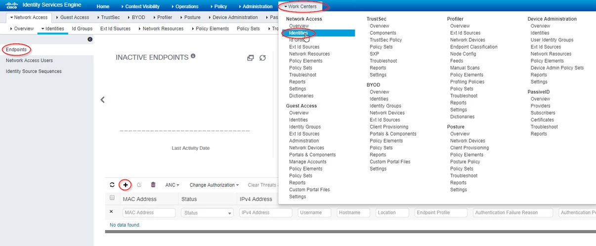Fill in the details and click Save
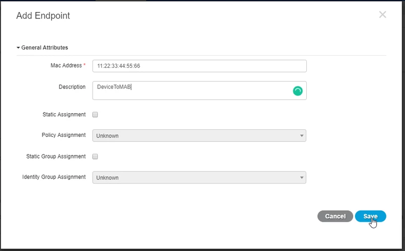Posture Assessment
NAC Provisioning
Download the latest updates for ISE to check devices via NAC
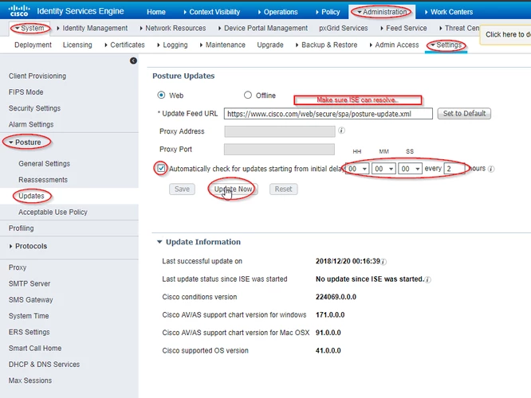Download the latest NAC Agents from Cisco to ISE
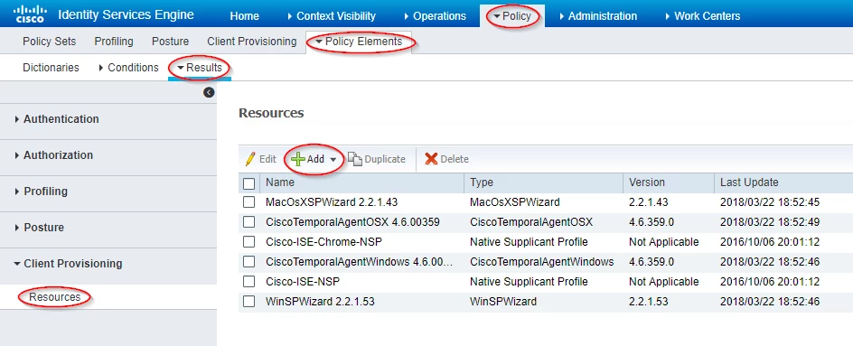Download one of each of the latest one
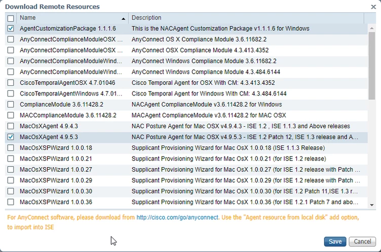